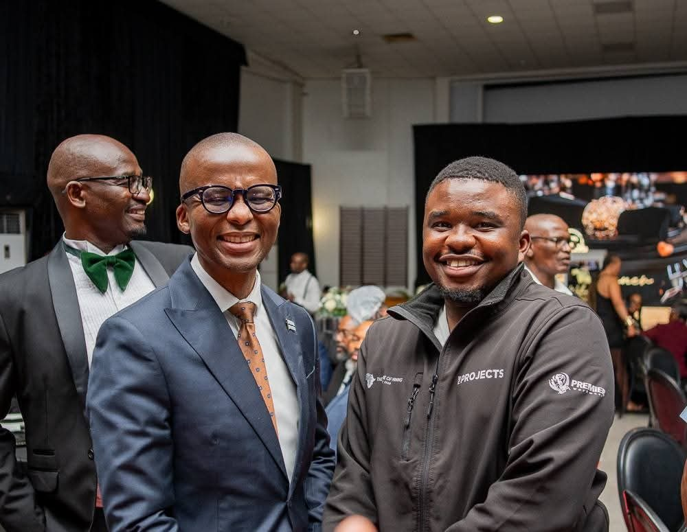
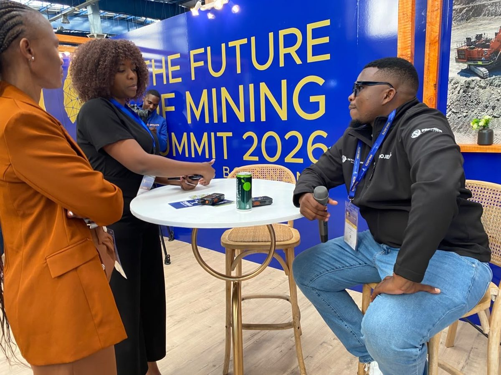
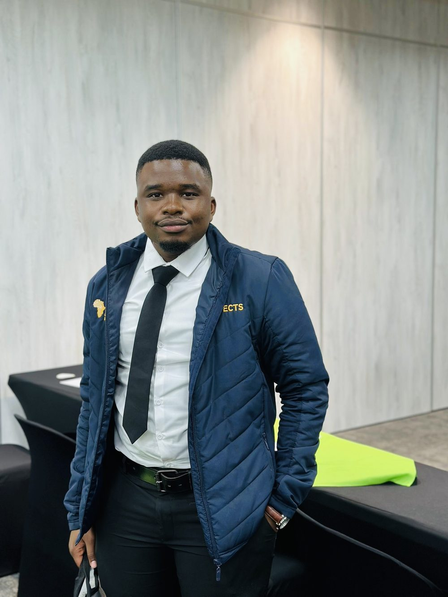

Mapping for Good
Turning satellite data into safer communities
Hello, I'm Lawrence. I am a part-time MSc student in the Department of Environmental Science at the University of Botswana and a part-time Teaching Assistant, teaching GIS to undergraduates. I work with GIS and satellite imagery to answer environmental questions, and I am the co-founder of Neoterra, a Gaborone-based geospatial company. I work in Setswana and English and I'm open to GIS roles, collaborations and new projects, so please get in touch.
Get in touchWhat I Do
Spatial thinking for environmental questions
Spatial Analysis
Turning environmental and field data into clear maps that support decisions.
ArcGIS Pro · QGISRemote Sensing
Processing satellite imagery to detect water, land cover and change over time.
Google Earth EngineTeaching & Building
Teaching GIS to undergraduates, and building geospatial products as co-founder of Neoterra.
Teaching Assistant · Co-founderMy company
Neoterra
New Earth. Deeper Insight.
I co-founded Neoterra, a Gaborone-based geospatial company. We use GIS, remote sensing and field data to help clients understand the land they work on, and turn that understanding into clear maps and decisions.
- Mapping & GIS
- Remote sensing
- Field data
From Satellite to Map
I use remote sensing and GIS to turn satellite imagery into clear, usable maps: tracking land cover, water and environmental change across Botswana, and sharing those skills with the students I teach.
See what I doGallery
Hover to explore · click to enlarge

01 / 04
02 / 04
04 / 04Education & Roles
- NOW
Co-founder, Neoterra
Geospatial company, Gaborone · New Earth. Deeper Insight.
- NOW
MSc, Environmental Science
University of Botswana · part-time · research using GIS and satellite imagery
- NOW
Teaching Assistant, GIS
University of Botswana · part-time · undergraduate GIS labs
- JUN – JUL 2023
GIS Analyst (Internship)
Department of Surveys and Mapping, Selebi Phikwe · spatial analysis and environmental mapping in ArcGIS Pro to support renewable energy and land-use planning
- 2020 – 2024
BA, Environmental Science
University of Botswana · GIS and Remote Sensing stream
Let's Work Together
GIS roles, research collaboration, or a conversation about environmental risk.
Jane@neoterra.co.bw